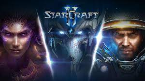
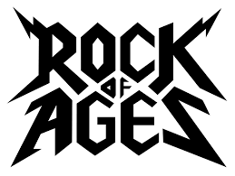

Tegzes Márton
Mi a célom?
Célom hogy elkejezkedjek hálózat és programozás terén dolgozni.
Mit tanultam eddig?
Ezeket az adott programozási nyelveket tanultam
- C#
- Pyton
- Java
- Cisco Packet Tracer
A hobbijaim
Szeretek kirándulni, a számítógépes játékokat játszani és szeretek zenét halgatni

